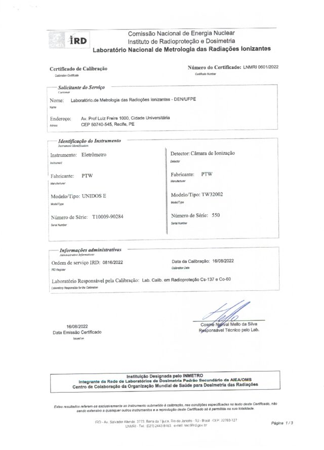

Qualidade e
competência técnica.
O LMRI oferece serviços metrológicos que atendem a todos os requisitos da ABNT NBR ISO/IEC 17025:2017.
- Acreditação Cgcre/Inmetro
Acreditado pela Coordenação-Geral de Acreditação do Inmetro segundo a ABNT NBR ISO/IEC 17025:2017, para os serviços do escopo acreditado. O LMRI faz parte da Rede Brasileira de Calibração (RBC) e do SIBRATEC.
Consultar a Rede Brasileira de Calibração- Autorização CASEC/IRD/CNEN
Autorizado desde 2002 pelo Comitê de Avaliação de Serviços de Ensaio e Calibração para calibrar alarmes pessoais (PA), canetas dosimétricas (CD), monitores de área (GM) e monitores de contaminação de superfície (CS).
- Avaliação de equipamentos de radiodiagnóstico
Feita com base na RDC 330 do Ministério da Saúde.
Rastreabilidade
ao padrão nacional.
O padrão de referência do LMRI é calibrado pelo Laboratório Nacional de Metrologia das Radiações Ionizantes (LNMRI), do Instituto de Radioproteção e Dosimetria da CNEN.
- Certificado
- LNMRI 0601/2022
- Data da calibração
- 16 de agosto de 2022
- Instrumento
- Eletrômetro PTW UNIDOS E, série T10009-90284
- Detector
- Câmara de ionização PTW TW32002, série 550
- Feixes
- Cs-137 e Co-60, laboratório de calibração em radioproteção do LNMRI
